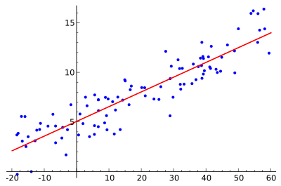
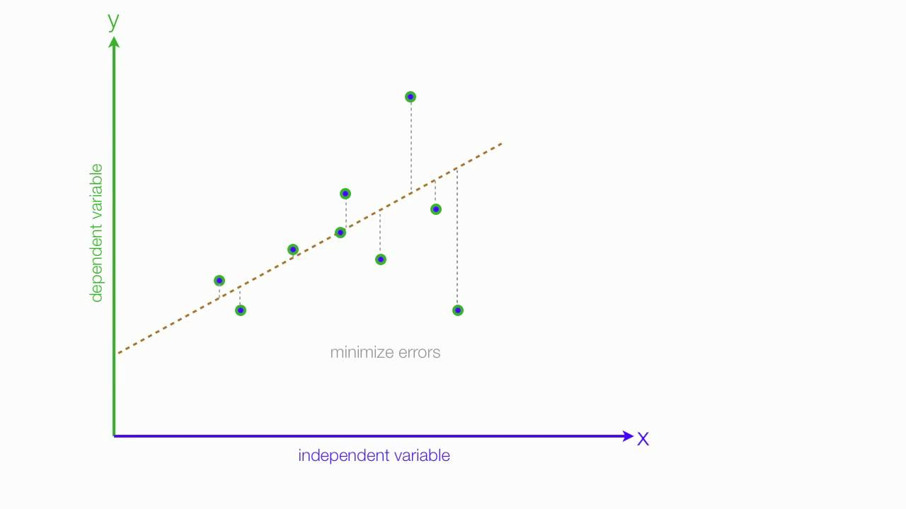
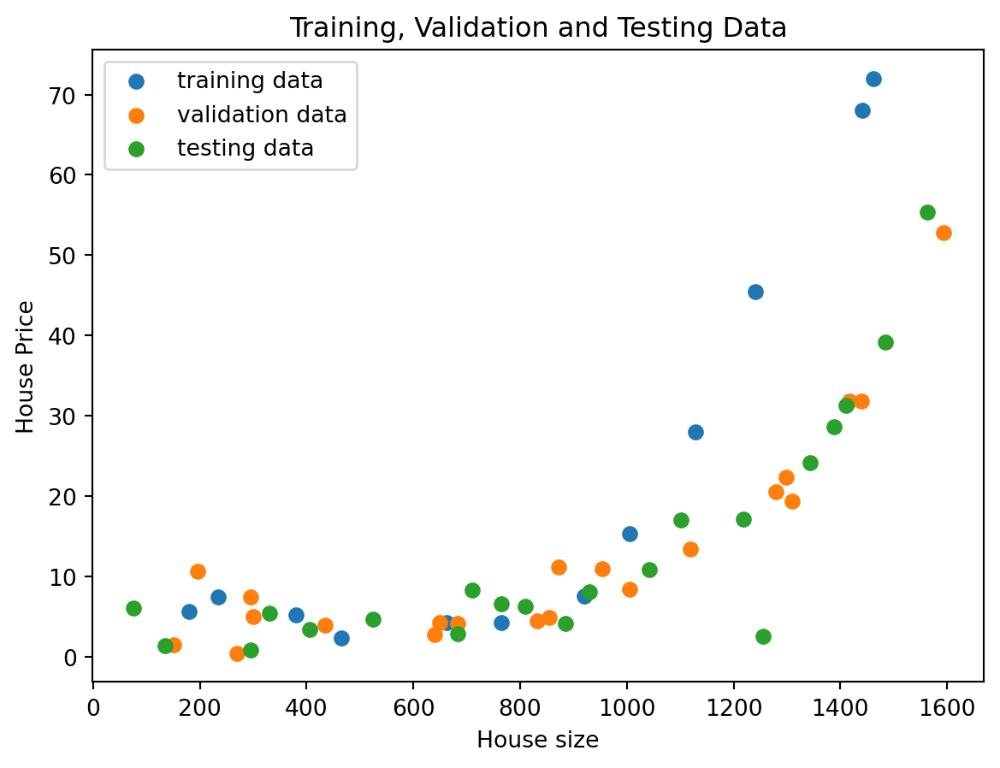
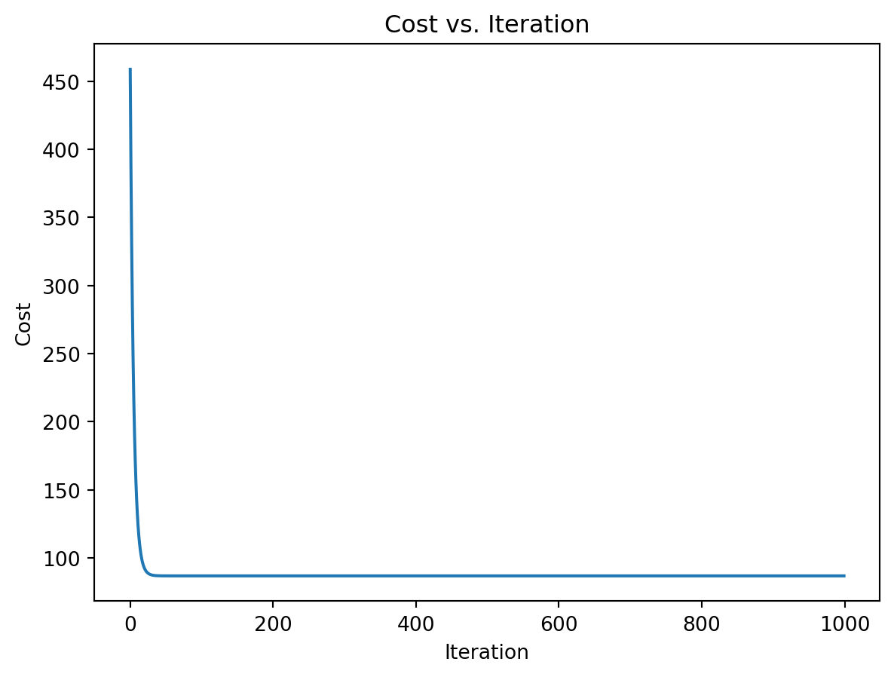
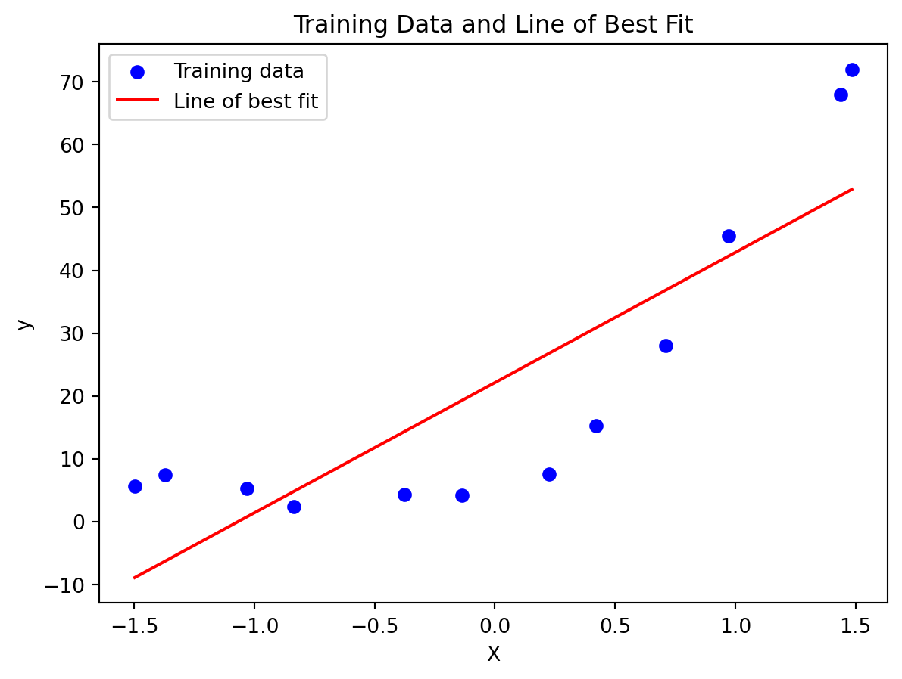

Regression is a statistical technique in machine learning and statistics that aims to establish a relationship between a dependent variable (target) and one or more independent variables (features or predictors). The primary goal of regression analysis is to model the relationship between these variables, enabling the prediction or estimation of the dependent variable based on the values of the independent variables.
In simpler terms, regression helps us understand how the changes in one or more variables are associated with changes in another variable. It is widely used for prediction and forecasting, making it a fundamental tool in various fields, including finance, economics, biology, and social sciences.
There are several types of regression models, with linear regression being one of the most common. In linear regression, the relationship between the variables is modeled as a linear equation, representing a straight line on a graph. However, regression is not limited to linear relationships; non-linear regression models can capture more complex patterns, accommodating scenarios where the relationship between variables is curved or follows a different pattern.
The training process in regression involves fitting the model to historical data, allowing the algorithm to learn the underlying patterns. Once trained, the regression model can be used to make predictions on new, unseen data, providing valuable insights and aiding decision-making processes.
In this post, we will consider the implementation of linear and nonlinear regression for predicting house prices based on size
Simple Linear Regression
Simple Linear Regression is a fundamental and straightforward form of regression analysis where the relationship between two variables is modeled using a linear equation. In this case, there are two variables: one is considered the independent variable (often denoted as \(X\)), and the other is the dependent variable (often denoted as \(Y\)).
Model Representation
The equation for simple linear regression is represented as:
\[Y = \beta_0 + \beta_1 X + \epsilon\]
The \(\beta_1\) is called a scale factor or coefficient and \(\beta_0\) is called bias coefficient. The bias coefficient gives an extra degree of freedom to this model and \(\epsilon\) is the error term accounting for unobserved factors that affect Y but are not accounted for by the model
This equation is similar to the line equation \(y = mx +b\) with \(m = \beta_1\)(Slope) and \(b = \beta_0\)(Intercept). So in this Simple Linear Regression model we want to draw a line between X and Y which estimates the relationship between X and Y.
But how do we find these coefficients? That’s the learning procedure. We can find these using different approaches. One is called Ordinary Least Square Method and other one is called Gradient Descent Approach.
Ordinary Least Square Method
The Ordinary Least Squares (OLS) method is a common approach used in linear regression to estimate the parameters of the linear equation by minimizing the sum of the squared differences between the observed and predicted values of the dependent variable. In simple terms, OLS aims to find the best-fitting line through the data points.
Let’s say we have few inputs and outputs plotted in a 2D space with a scatter plot to yield the following image:

For a simple linear regression model with the equation given above, the OLS method seeks to find the values \(\beta_0\), \(\beta_1\) of the linear model that minimize the sum of squared residuals.
A good model will always have least error and we can find this line by reducing the error. The error of each point is the distance between line and that point. This is illustrated as follows.

And total error of this model is the sum of all errors of each point. ie.
\[
D = \sum_{i=1}^{m} d_i^2
\]
\(d_i\) - Distance between line and ith point.
\(m\) - Total number of points
You may have observed that we are taking the square of each distance. This is done because certain points lie above the line while others lie below it. By minimizing D, we aim to reduce the error in the model.
We are going to use a dataset containing the price of houses as a function of size to implement regression. This data is split into 3 for training, validation and finally testing. Let’s start off by importing and viewing the data.
#Import the needed librariesimport pandas as pdimport matplotlib.pyplot as pltimport jsonimport numpy as npwithopen('assignment1.json', 'r') as json_file: data = json.load(json_file)X_train = np.array(data['X_train']).reshape(-1, 1)y_train = np.array(data['Y_train']).reshape(-1, 1)X_val = np.array(data['X_val']).reshape(-1, 1)y_val = np.array(data['Y_val']).reshape(-1, 1)X_test = np.array(data['X_test']).reshape(-1, 1)y_test = np.array(data['Y_test']).reshape(-1, 1)array1 = data['X_train']array2 = data['Y_train']array3 = data['X_val']array4 = data['Y_val']array5 = data['X_test']array6 = data['Y_test']print("Training Data")tableData = {'X_train': array1,'Y_train': array2,}table = pd.DataFrame(tableData)print(table.head(3))print(f"number of rows and colums: {table.shape}")print()print("Validation Data")tableData2 = {'X_Val': array3,'Y_Val': array4}table2 = pd.DataFrame(tableData2)print(table2.head(3))print(f"number of rows and colums: {table2.shape}")print()print("Test Data")tableData3 = {'X_test': array5,'Y_test': array6}table3 = pd.DataFrame(tableData3)print(table3.head(3))print(f"number of rows and colums: {table3.shape}")
Training Data
X_train Y_train
0 661.5 4.25
1 465.0 2.30
2 1442.0 68.00
number of rows and colums: (12, 2)
Validation Data
X_Val Y_Val
0 650.0 4.170
1 682.5 4.067
2 1417.0 31.870
number of rows and colums: (21, 2)
Test Data
X_test Y_test
0 405.0 3.316
1 330.0 5.400
2 135.0 1.300
number of rows and colums: (21, 2)
As we can see, the data is split unequally between training, validation and testing. The training data has 12 entries while the validation and testing data have 21 entries.
we need to implement feature scaling.
Feature scaling is a preprocessing step in machine learning that involves adjusting the scale of the input features to a similar range. The goal is to ensure that all features contribute equally to the model training process, preventing certain features from dominating due to their larger scales.
Text(0.5, 1.0, 'Training, Validation and Testing Data')

Lets create a function to implement linear regression with L2 regularization.
Linear regression with regularization is an extension of traditional linear regression that incorporates regularization techniques to prevent overfitting and improve the model’s generalization performance. The two common types of regularization used in linear regression are Ridge Regression (L2 regularization) and Lasso Regression (L1 regularization).
# Step 3: Implement regularized linear regression with gradient descentdef ridge_regression(X, y, alpha, num_iterations, learning_rate): m, n = X.shape# Initialize theta with the correct shape theta = np.zeros((n, 1)) history = []for _ inrange(num_iterations): gradient = (X.T @ (X @ theta - y) + alpha * theta) / m theta -= learning_rate * gradient cost = np.sum((X @ theta - y) **2) / (2* m) + (alpha / (2* m)) * np.sum(theta[1:] **2) history.append(cost)return theta, history, cost
In the equation above, \(\lambda\) is the regularization parameter which ensures a balance between the trade-off between fitting the training data well and keeping the model simple. This is implemented with the gradient descent algorithm.
Gradient Descent
Gradient Descent is an optimization algorithm. We will optimize our cost function using Gradient Descent Algorithm.
Step 1
Initialize values \(\theta_0, \theta_1, ..., \theta_n\) with some value. In this case we will initialize with 0.
This is the procedure. Here \(\alpha\) is the learning rate. This operation \(\frac{\partial}{\partial \theta_j} J(\theta)\) means we are finding partial derivative of cost with respect to each \(\theta_j\). This is called Gradient.
In step 2 we are changing the values of \(\theta_j\). in a direction in which it reduces our cost function. And Gradient gives the direction in which we want to move. Finally we will reach the minima of our cost function. But we don’t want to change values of \(\theta_j\). drastically, because we might miss the minima. That’s why we need learning rate.
Animation illustrating the gradient descent method
The above animation illustrates the Gradient Descent method.
Here \(\hat{y_i}\) is the \(i^{th}\) predicted output values.
# Step 6: Evaluate the model using the testing dataX_test_extended = np.column_stack((np.ones_like(X_test), X_test))theta_test, _, cost = ridge_regression(X_train_extended, y_train, best_alpha, num_iterations, learning_rate)y_test_pred = X_test_extended @ theta_testmse_test = np.mean((y_test - y_test_pred) **2)print(f"Mean Squared Error on Test Data: {mse_test}")print(cost)
Mean Squared Error on Test Data: 81.6638569462924
234.9787954527312
# Plot the cost history during trainingplt.plot(range(num_iterations), history)plt.xlabel('Iteration')plt.ylabel('Cost')plt.title('Cost vs. Iteration')plt.show()

Plotting the training data and line of best fit
# Plot training data and line of best fitplot_data_and_fit(X_train, y_train, theta)print(theta)

[[22.10833333]
[20.73627522]]
\[
House Price = 22.108 + 20.736 \times House size
\]
Nonlinear Regression
Nonlinear regression is a type of regression analysis where the relationship between the independent variable(s) and the dependent variable is modeled as a nonlinear function. In contrast to linear regression, which assumes a linear relationship between variables, nonlinear regression allows for more complex and curved relationships to be captured.
The general form of nonlinear regression is expressed as:
\[
Y = f(X, \theta) + \epsilon
\]
Where:
\(Y\) is the dependent variable
\(X\) is the independent variable(s)
\(\theta\) represents the parameters of the nonlinear function \(f\)
\(\epsilon\) is the error term
The goal of nonlinear regression is to estimate the parameters \((\theta)\) of the chosen nonlinear function in a way that minimizes the sum of squared differences between the predicted values and the actual observed values. This is typically done using optimization techniques, such as gradient descent or other numerical optimization algorithms.
Implementation
# Step 4: Train the model using the training dataalpha =10# Regularization strength (adjust as needed)num_iterations =1000learning_rate =0.1degree =3# Degree of the polynomial features# Create polynomial featuresX_train_poly = np.column_stack([X_train ** i for i inrange(1, degree +1)])# Train the model using polynomial featuresX_train_poly = np.column_stack((np.ones_like(X_train_poly), X_train_poly))theta, history_train, cost_train = ridge_regression(X_train_poly, y_train, alpha, num_iterations, learning_rate)print(f"Training cost: {cost_train}")print(theta)# Step 5: Tune the regularization parameter using the validation dataalphas = [0.01, 0.1, 1, 10, 100]mse_val = []for alpha in alphas:# Create polynomial features for validation data X_val_poly = np.column_stack([X_val ** i for i inrange(1, degree +1)]) X_val_poly = np.column_stack((np.ones_like(X_val_poly), X_val_poly)) theta_val, history_val, cost_val = ridge_regression(X_val_poly, y_val, alpha, num_iterations, learning_rate) y_val_pred = X_val_poly @ theta_val mse = np.mean((y_val - y_val_pred) **2) mse_val.append(mse)""" # Plot the cost history for both training and validation plt.plot(range(num_iterations), history_train, label='Training Cost', color='blue') plt.plot(range(num_iterations), history_val, label='Validation Cost', color='red') plt.xlabel('Iteration') plt.ylabel('Cost') plt.title('Cost vs. Iteration') plt.legend() plt.show()"""best_alpha = alphas[np.argmin(mse_val)]print(f"Best regularization parameter (alpha): {best_alpha}")# Step 6: Evaluate the model using the testing data# Create polynomial features for test dataX_test_poly = np.column_stack([X_test ** i for i inrange(1, degree +1)])X_test_poly = np.column_stack((np.ones_like(X_test_poly), X_test_poly))theta_test, _, cost_test = ridge_regression(X_test_poly, y_test, best_alpha, num_iterations, learning_rate)y_test_pred = X_test_poly @ theta_testmse_test = np.mean((y_test - y_test_pred) **2)print(f"Mean Squared Error on Test Data: {mse_test}")# Plot training data and the polynomial fitplt.scatter(X_train, y_train, color='blue', label='Training data')x_values = np.linspace(min(X_train), max(X_train), 100).reshape(-1, 1)x_values_poly = np.column_stack([x_values ** i for i inrange(1, degree +1)])x_values_poly = np.column_stack((np.ones_like(x_values_poly), x_values_poly))y_values = x_values_poly @ thetaplt.plot(x_values, y_values, color='red', label=f'Polynomial Fit (Degree {degree})')plt.xlabel('X')plt.ylabel('y')plt.title('Training Data and Polynomial Fit')plt.legend()plt.show()
Training cost: 104.19514186498827
[[3.51715242]
[3.51715242]
[3.51715242]
[5.00411734]
[8.66812878]
[6.78627004]]
Best regularization parameter (alpha): 0.01
Mean Squared Error on Test Data: 19.60464293191099
---title: "Regression (Linear and Nonlinear)"author: "Daniel A. Udekwe"date: "2023-11-26"categories: [data, code, analysis]image: "regression.png"---Regression is a statistical technique in machine learning and statistics that aims to establish a relationship between a **dependent variable (target)** and one or more **independent variables (features or predictors)**. The primary goal of regression analysis is to model the relationship between these variables, enabling the prediction or estimation of the dependent variable based on the values of the independent variables.In simpler terms, regression helps us understand how the changes in one or more variables are associated with changes in another variable. It is widely used for prediction and forecasting, making it a fundamental tool in various fields, including finance, economics, biology, and social sciences.There are several types of regression models, with linear regression being one of the most common. In linear regression, the relationship between the variables is modeled as a linear equation, representing a straight line on a graph. However, regression is not limited to linear relationships; non-linear regression models can capture more complex patterns, accommodating scenarios where the relationship between variables is curved or follows a different pattern.The training process in regression involves fitting the model to historical data, allowing the algorithm to learn the underlying patterns. Once trained, the regression model can be used to make predictions on new, unseen data, providing valuable insights and aiding decision-making processes.In this post, we will consider the implementation of linear and nonlinear regression for predicting house prices based on size## Simple Linear RegressionSimple Linear Regression is a fundamental and straightforward form of regression analysis where the relationship between two variables is modeled using a linear equation. In this case, there are two variables: one is considered the independent variable (often denoted as $X$), and the other is the dependent variable (often denoted as $Y$).### Model RepresentationThe equation for simple linear regression is represented as:$$Y = \beta_0 + \beta_1 X + \epsilon$$The $\beta_1$ is called a scale factor or **coefficient** and $\beta_0$ is called **bias coefficient**. The bias coefficient gives an extra degree of freedom to this model and $\epsilon$ is the error term accounting for unobserved factors that affect Y but are not accounted for by the modelThis equation is similar to the line equation $y = mx +b$ with $m = \beta_1$(Slope) and $b = \beta_0$(Intercept). So in this Simple Linear Regression model we want to draw a line between X and Y which estimates the relationship between X and Y.But how do we find these coefficients? That's the learning procedure. We can find these using different approaches. One is called **Ordinary Least Square Method** and other one is called **Gradient Descent Approach**.### Ordinary Least Square MethodThe Ordinary Least Squares (OLS) method is a common approach used in linear regression to estimate the parameters of the linear equation by minimizing the sum of the squared differences between the observed and predicted values of the dependent variable. In simple terms, OLS aims to find the best-fitting line through the data points.Let's say we have few inputs and outputs plotted in a 2D space with a scatter plot to yield the following image:{fig-align="center"}For a simple linear regression model with the equation given above, the OLS method seeks to find the values $\beta_0$, $\beta_1$ of the linear model that minimize the sum of squared residuals.A good model will always have least error and we can find this line by reducing the error. The error of each point is the distance between line and that point. This is illustrated as follows.{fig-align="center"}And total error of this model is the sum of all errors of each point. ie.$$D = \sum_{i=1}^{m} d_i^2$$$d_i$ - Distance between line and i^th^ point.$m$ - Total number of pointsYou may have observed that we are taking the square of each distance. This is done because certain points lie above the line while others lie below it. By minimizing D, we aim to reduce the error in the model.$$\beta_1 = \frac{\sum_{i=1}^{m} (x_i - \bar{x})(y_i - \bar{y})}{\sum_{i=1}^{m} (x_i - \bar{x})^2}$$$$\beta_0 = \bar{y} - \beta_1\bar{x}$$In these equations $\bar{x}$ is the mean value of input variable $x$ and $\bar{y}$ is the mean value of output variable $y$Now we have the *Ordinary Least Square Method* which is described with the following equations$$Y = \beta_0 + \beta_1X$$$$\beta_1 = \frac{\sum_{i=1}^{m} (x_i - \bar{x})(y_i - \bar{y})}{\sum_{i=1}^{m} (x_i - \bar{x})^2}$$$$\beta_0 = \bar{y} - \beta_1\bar{x}$$### ImplementationWe are going to use a dataset containing the price of houses as a function of size to implement regression. This data is split into 3 for training, validation and finally testing. Let's start off by importing and viewing the data.```{python}#Import the needed librariesimport pandas as pdimport matplotlib.pyplot as pltimport jsonimport numpy as npwithopen('assignment1.json', 'r') as json_file: data = json.load(json_file)X_train = np.array(data['X_train']).reshape(-1, 1)y_train = np.array(data['Y_train']).reshape(-1, 1)X_val = np.array(data['X_val']).reshape(-1, 1)y_val = np.array(data['Y_val']).reshape(-1, 1)X_test = np.array(data['X_test']).reshape(-1, 1)y_test = np.array(data['Y_test']).reshape(-1, 1)array1 = data['X_train']array2 = data['Y_train']array3 = data['X_val']array4 = data['Y_val']array5 = data['X_test']array6 = data['Y_test']print("Training Data")tableData = {'X_train': array1,'Y_train': array2,}table = pd.DataFrame(tableData)print(table.head(3))print(f"number of rows and colums: {table.shape}")print()print("Validation Data")tableData2 = {'X_Val': array3,'Y_Val': array4}table2 = pd.DataFrame(tableData2)print(table2.head(3))print(f"number of rows and colums: {table2.shape}")print()print("Test Data")tableData3 = {'X_test': array5,'Y_test': array6}table3 = pd.DataFrame(tableData3)print(table3.head(3))print(f"number of rows and colums: {table3.shape}")```As we can see, the data is split unequally between training, validation and testing. The training data has 12 entries while the validation and testing data have 21 entries.we need to implement feature scaling.Feature scaling is a preprocessing step in machine learning that involves adjusting the scale of the input features to a similar range. The goal is to ensure that all features contribute equally to the model training process, preventing certain features from dominating due to their larger scales.```{python}# Step 2: Preprocess the data (feature scaling)mean = np.mean(X_train)std = np.std(X_train)X_train = (X_train - mean) / stdX_val = (X_val - mean) / stdX_test = (X_test - mean) / std```Next, we will find a linear relationship house prices and sizes but it is important to visualize this data on a scatter plot. But first```{python}plt.scatter(array1, array2, label='training data')plt.scatter(array3, array4, label='validation data')plt.scatter(array5, array6, label='testing data')plt.ylabel('House Price')plt.xlabel('House size')plt.legend()plt.title('Training, Validation and Testing Data')```Lets create a function to implement linear regression with L2 regularization.Linear regression with regularization is an extension of traditional linear regression that incorporates regularization techniques to prevent overfitting and improve the model's generalization performance. The two common types of regularization used in linear regression are Ridge Regression (L2 regularization) and Lasso Regression (L1 regularization).$$J(\theta) = \frac{1}{2m} (\sum_{i=1}^m(h_\theta(x^{(i)})-y^{(i)})^2) + \frac{\lambda}{2m}(\sum_{j=1}^n \theta_j^2)$$```{python}# Step 3: Implement regularized linear regression with gradient descentdef ridge_regression(X, y, alpha, num_iterations, learning_rate): m, n = X.shape# Initialize theta with the correct shape theta = np.zeros((n, 1)) history = []for _ inrange(num_iterations): gradient = (X.T @ (X @ theta - y) + alpha * theta) / m theta -= learning_rate * gradient cost = np.sum((X @ theta - y) **2) / (2* m) + (alpha / (2* m)) * np.sum(theta[1:] **2) history.append(cost)return theta, history, cost```In the equation above, $\lambda$ is the regularization parameter which ensures a balance between the trade-off between fitting the training data well and keeping the model simple. This is implemented with the gradient descent algorithm.### Gradient DescentGradient Descent is an optimization algorithm. We will optimize our cost function using Gradient Descent Algorithm.#### Step 1Initialize values $\theta_0, \theta_1, ..., \theta_n$ with some value. In this case we will initialize with 0.#### Step 2Iteratively update,$$\theta_j : \theta_j - \alpha \frac{\partial}{\partial \theta_j} J(\theta)$$until it converges, where:$$\frac{\partial J(\theta)}{\partial \theta_0} = \frac{1}{m} \sum_{i=1}^m (h_\theta(x^{(i)}) - y^{(i)})x_j^{(i)}, \ j = 0$$$$\frac{\partial J(\theta)}{\partial \theta_j} = \frac{1}{m} \sum_{i=1}^m (h_\theta(x^{(i)}) - y^{(i)})x_j^{(i)}, + \frac{\lambda}{m}\theta_j \ j\ge 1 $$This is the procedure. Here $\alpha$ is the learning rate. This operation $\frac{\partial}{\partial \theta_j} J(\theta)$ means we are finding partial derivative of cost with respect to each $\theta_j$. This is called Gradient.In step 2 we are changing the values of $\theta_j$. in a direction in which it reduces our cost function. And Gradient gives the direction in which we want to move. Finally we will reach the minima of our cost function. But we don't want to change values of $\theta_j$. drastically, because we might miss the minima. That's why we need learning rate.{fig-align="center"}The above animation illustrates the Gradient Descent method.After making substitutions, Step 2 becomes:$$\theta_j := \theta_j - \alpha \frac{1}{m} \sum_{i=1}^m (h_\theta(x^{(i)}) - y^{(i)})x_j^{(i)}, + \frac{\lambda}{m}\theta_j$$We iteratively change values of $\theta_j$ according to above equation. This particular method is called **Batch Gradient Descent**.Then we need to implement a function to plot the line of best fit```{python}def plot_data_and_fit(X_train, y_train, theta): plt.scatter(X_train, y_train, color='blue', label='Training data') x_values = np.linspace(min(X_train), max(X_train), 100).reshape(-1, 1) x_values_extended = np.column_stack((np.ones_like(x_values), x_values)) y_values = x_values_extended @ theta plt.plot(x_values, y_values, color='red', label='Line of best fit') plt.xlabel('X') plt.ylabel('y') plt.title('Training Data and Line of Best Fit') plt.legend() plt.show()```Next we will train the model using the training data and return the cost using the equations below:```{python}# Step 4: Train the model using the training dataalpha =0# Regularization strength (adjust as needed)num_iterations =1000learning_rate =0.1X_train_extended = np.column_stack((np.ones_like(X_train), X_train))theta, history, cost = ridge_regression(X_train_extended, y_train, alpha, num_iterations, learning_rate)print(f"the cost iss: {cost}")```Then tuning the regularization parameter```{python}# Step 5: Tune the regularization parameter using the validation dataalphas = [0.01, 0.1, 1, 10, 100]mse_val = []for alpha in alphas: X_val_extended = np.column_stack((np.ones_like(X_val), X_val)) theta_val, history_, cost = ridge_regression(X_train_extended, y_train, alpha, num_iterations, learning_rate) y_val_pred = X_val_extended @ theta_val mse = np.mean((y_val - y_val_pred) **2) mse_val.append(mse)best_alpha = alphas[np.argmin(mse_val)]print(f"Best regularization parameter (alpha): {best_alpha}")```Evaluating the Model on the Testing data using the root mean square of errors.Root Mean Squared Error is the square root of sum of all errors divided by number of values, or Mathematically,$$RMSE = \sqrt{\sum_{i=1}^m \frac{1}{m}(\hat{y_1}-y_i)^2)}$$Here $\hat{y_i}$ is the $i^{th}$ predicted output values.```{python}# Step 6: Evaluate the model using the testing dataX_test_extended = np.column_stack((np.ones_like(X_test), X_test))theta_test, _, cost = ridge_regression(X_train_extended, y_train, best_alpha, num_iterations, learning_rate)y_test_pred = X_test_extended @ theta_testmse_test = np.mean((y_test - y_test_pred) **2)print(f"Mean Squared Error on Test Data: {mse_test}")print(cost)``````{python}# Plot the cost history during trainingplt.plot(range(num_iterations), history)plt.xlabel('Iteration')plt.ylabel('Cost')plt.title('Cost vs. Iteration')plt.show()```Plotting the training data and line of best fit```{python}# Plot training data and line of best fitplot_data_and_fit(X_train, y_train, theta)print(theta)```$$House Price = 22.108 + 20.736 \times House size$$------------------------------------------------------------------------## Nonlinear RegressionNonlinear regression is a type of regression analysis where the relationship between the independent variable(s) and the dependent variable is modeled as a nonlinear function. In contrast to linear regression, which assumes a linear relationship between variables, nonlinear regression allows for more complex and curved relationships to be captured.The general form of nonlinear regression is expressed as:$$Y = f(X, \theta) + \epsilon$$Where:- $Y$ is the dependent variable- $X$ is the independent variable(s)- $\theta$ represents the parameters of the nonlinear function $f$- $\epsilon$ is the error termThe goal of nonlinear regression is to estimate the parameters $(\theta)$ of the chosen nonlinear function in a way that minimizes the sum of squared differences between the predicted values and the actual observed values. This is typically done using optimization techniques, such as gradient descent or other numerical optimization algorithms.### Implementation```{python}# Step 4: Train the model using the training dataalpha =10# Regularization strength (adjust as needed)num_iterations =1000learning_rate =0.1degree =3# Degree of the polynomial features# Create polynomial featuresX_train_poly = np.column_stack([X_train ** i for i inrange(1, degree +1)])# Train the model using polynomial featuresX_train_poly = np.column_stack((np.ones_like(X_train_poly), X_train_poly))theta, history_train, cost_train = ridge_regression(X_train_poly, y_train, alpha, num_iterations, learning_rate)print(f"Training cost: {cost_train}")print(theta)# Step 5: Tune the regularization parameter using the validation dataalphas = [0.01, 0.1, 1, 10, 100]mse_val = []for alpha in alphas:# Create polynomial features for validation data X_val_poly = np.column_stack([X_val ** i for i inrange(1, degree +1)]) X_val_poly = np.column_stack((np.ones_like(X_val_poly), X_val_poly)) theta_val, history_val, cost_val = ridge_regression(X_val_poly, y_val, alpha, num_iterations, learning_rate) y_val_pred = X_val_poly @ theta_val mse = np.mean((y_val - y_val_pred) **2) mse_val.append(mse)""" # Plot the cost history for both training and validation plt.plot(range(num_iterations), history_train, label='Training Cost', color='blue') plt.plot(range(num_iterations), history_val, label='Validation Cost', color='red') plt.xlabel('Iteration') plt.ylabel('Cost') plt.title('Cost vs. Iteration') plt.legend() plt.show()"""best_alpha = alphas[np.argmin(mse_val)]print(f"Best regularization parameter (alpha): {best_alpha}")# Step 6: Evaluate the model using the testing data# Create polynomial features for test dataX_test_poly = np.column_stack([X_test ** i for i inrange(1, degree +1)])X_test_poly = np.column_stack((np.ones_like(X_test_poly), X_test_poly))theta_test, _, cost_test = ridge_regression(X_test_poly, y_test, best_alpha, num_iterations, learning_rate)y_test_pred = X_test_poly @ theta_testmse_test = np.mean((y_test - y_test_pred) **2)print(f"Mean Squared Error on Test Data: {mse_test}")# Plot training data and the polynomial fitplt.scatter(X_train, y_train, color='blue', label='Training data')x_values = np.linspace(min(X_train), max(X_train), 100).reshape(-1, 1)x_values_poly = np.column_stack([x_values ** i for i inrange(1, degree +1)])x_values_poly = np.column_stack((np.ones_like(x_values_poly), x_values_poly))y_values = x_values_poly @ thetaplt.plot(x_values, y_values, color='red', label=f'Polynomial Fit (Degree {degree})')plt.xlabel('X')plt.ylabel('y')plt.title('Training Data and Polynomial Fit')plt.legend()plt.show()``````{python} plt.plot(range(num_iterations), history_train, label='Training Cost', color='blue') plt.plot(range(num_iterations), history_val, label='Validation Cost', color='red') plt.xlabel('Iteration') plt.ylabel('Cost') plt.title('Cost vs. Iteration') plt.legend() plt.show()```